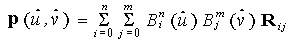
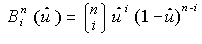
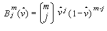
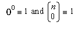
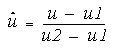
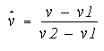

title: glMap2f function (Gl.h) description: The glMap2f function defines a two-dimensional evaluator. | glMap2f function (Gl.h) ms.assetid: 804fbf65-98a8-41af-8c39-5b83f3d341b0 keywords:
The glMap2d and glMap2f functions define a two-dimensional evaluator.
void WINAPI glMap2f(
GLenum target,
GLfloat u1,
GLfloat u2,
GLint ustride,
GLint uorder,
GLfloat v1,
GLfloat v2,
GLint vstride,
GLint vorder,
const GLfloat *points
);
target
The kind of values that are generated by the evaluator. The following symbolic constants are accepted.
| Value | Meaning |
|---|---|
| GL_MAP2_VERTEX_3 | Each control point is three floating-point values representing x, y, and z. Internal glVertex3 commands are generated when the map is evaluated. |
| GL_MAP2_VERTEX_4 | Each control point is four floating-point values representing x, y, z, and w. Internal glVertex4 commands are generated when the map is evaluated. |
| GL_MAP2_INDEX | Each control point is a single floating-point value representing a color index. Internal glIndex commands are generated when the map is evaluated. The current index is not updated with the value of these glIndex commands, however. |
| GL_MAP2_COLOR_4 | Each control point is four floating-point values representing red, green, blue, and alpha. Internal glColor4 commands are generated when the map is evaluated. The current color is not updated with the value of these glColor4 commands, however. |
| GL_MAP2_NORMAL | Each control point is three floating-point values representing the x, y, and z components of a normal vector. Internal glNormal commands are generated when the map is evaluated. The current normal is not updated with the value of these glNormal commands, however. |
| GL_MAP2_TEXTURE_COORD_1 | Each control point is a single floating-point value representing the s texture coordinate. Internal glTexCoord1 commands are generated when the map is evaluated. The current texture coordinates are not updated with the value of these glTexCoord commands, however. |
| GL_MAP2_TEXTURE_COORD_2 | Each control point is two floating-point values representing the s and t texture coordinates. Internal glTexCoord2 commands are generated when the map is evaluated. The current texture coordinates are not updated with the value of these glTexCoord commands, however. |
| GL_MAP2_TEXTURE_COORD_3 | Each control point is three floating-point values representing the s, t, and r texture coordinates. Internal glTexCoord3 commands are generated when the map is evaluated. The current texture coordinates are not updated with the value of these glTexCoord commands, however. |
| GL_MAP2_TEXTURE_COORD_4 | Each control point is four floating-point values representing the s, t, r, and q texture coordinates. Internal glTexCoord4 commands are generated when the map is evaluated. The current texture coordinates are not updated with the value of these glTexCoord commands, however. |
u1
A linear mapping of u, as presented to glEvalCoord2, to u^, one of the two variables that is evaluated by the equations specified by this command.
u2
A linear mapping of u, as presented to glEvalCoord2, to u^, one of the two variables that is evaluated by the equations specified by this command.
ustride
The number of floats or doubles between the beginning of control point R ij and the beginning of control point R (i\ +1\ )\ j, where i and j are the u and v control point indexes, respectively. This allows control points to be embedded in arbitrary data structures. The only constraint is that the values for a particular control point must occupy contiguous memory locations.
uorder
The dimension of the control point array in the u-axis. Must be positive.
v1
A linear mapping of v, as presented to glEvalCoord2, to v^, one of the two variables that is evaluated by the equations specified by this command.
v2
A linear mapping of v, as presented to glEvalCoord2, to v^, one of the two variables that is evaluated by the equations specified by this command.
vstride
The number of floats or doubles between the beginning of control point R ij and the beginning of control point R i(j\ +1\ ), where i and j are the u and v control point indexes, respectively. This allows control points to be embedded in arbitrary data structures. The only constraint is that the values for a particular control point must occupy contiguous memory locations.
vorder
The dimension of the control point array in the v-axis. Must be positive.
points
A pointer to the array of control points.
This function does not return a value.
The following error codes can be retrieved by the glGetError function.
| Name | Meaning |
|---|---|
| GL_INVALID_ENUM | target was not an accepted value. |
| GL_INVALID_VALUE | u1 was equal to u2, or v1 was equal to v2. |
| GL_INVALID_VALUE | Either ustride or vstride was less than the number of values in a control point. |
| GL_INVALID_VALUE | Either uorder or vorder was less than one or GL_MAX_EVAL_ORDER. |
| GL_INVALID_OPERATION | The function was called between a call to glBegin and the corresponding call to glEnd. |
Evaluators provide a way to use polynomial or rational polynomial mapping to produce vertices, normals, texture coordinates, and colors. The values produced by an evaluator are sent on to further stages of OpenGL processing just as if they had been presented using glVertex, glNormal, glTexCoord, and glColor commands, except that the generated values do not update the current normal, texture coordinates, or color.
All polynomial or rational polynomial splines of any degree (up to the maximum degree supported by the OpenGL implementation) can be described using evaluators. These include almost all surfaces used in computer graphics, including B-spline surfaces, NURBS surfaces, Bezier surfaces, and so on.
Evaluators define surfaces based on bivariate Bernstein polynomials. Define p (u^,v^) as

where R ij is a control point, () is the ith Bernstein polynomial of degree
n (uorder = n + 1)

and () is the jth Bernstein polynomial of degree m (vorder = m + 1)

Recall that

The glMap2 function is used to define the basis and to specify what kind of values are produced. Once defined, a map can be enabled and disabled by calling glEnable and glDisable with the map name, one of the nine predefined values for target, described above. When glEvalCoord2 presents values u and v, the bivariate Bernstein polynomials are evaluated using u^ and v^, where

and

The target parameter is a symbolic constant that indicates what kind of control points are provided in points, and what output is generated when the map is evaluated.
The ustride, uorder, vstride, vorder, and points parameters define the array addressing for accessing the control points. The points parameter is the location of the first control point, which occupies one, two, three, or four contiguous memory locations, depending on which map is being defined. There are uorder x vorder control points in the array. The ustride parameter tells how many float or double locations are skipped to advance the internal memory pointer from control point R ij to control point R (\ i+1\ )j. The vstride parameter tells how many float or double locations are skipped to advance the internal memory pointer from control point R ij to control point Ri(j\ +1\ ).
As is the case with all OpenGL commands that accept pointers to data, it is as if the contents of points were copied by glMap2 before it returned. Changes to the contents of points have no effect after glMap2 is called.
The following functions retrieve information related to glMap2:
glGet with argument GL_MAX_EVAL_ORDER
glIsEnabled with argument GL_MAP2_VERTEX_3
glIsEnabled with argument GL_MAP2_VERTEX_4
glIsEnabled with argument GL_MAP2_INDEX
glIsEnabled with argument GL_MAP2_COLOR_4
glIsEnabled with argument GL_MAP2_NORMAL
glIsEnabled with argument GL_MAP2_TEXTURE_COORD_1
glIsEnabled with argument GL_MAP2_TEXTURE_COORD_2
glIsEnabled with argument GL_MAP2_TEXTURE_COORD_3
glIsEnabled with argument GL_MAP2_TEXTURE_COORD_4
| Requirement | Value |
|---|---|
| Minimum supported client | Windows 2000 Professional [desktop apps only] |
| Minimum supported server | Windows 2000 Server [desktop apps only] |
| Header | Gl.h |
| Library | Opengl32.lib |
| DLL | Opengl32.dll |